Training a Custom YOLO Object Detection Model
YOLO (You Only Look Once) means the AI looks at an image just once to find everything in it.
Synopsis
This report shows how I taught a computer to find and recognize toys in pictures, just like teaching a friend to spot their favorite characters!
Objects to Detect: Pikachu, Rosita, Sage, Timon (my Toys)
How Many Practice Sessions: 100
Final Score: 99.5 out of 100!
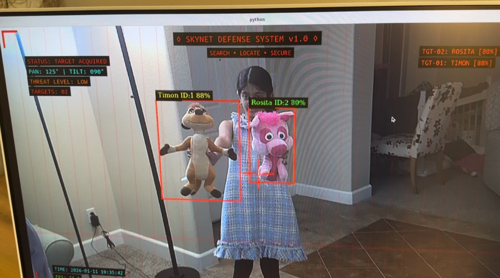
What Did I Do?
Imagine you have a friend who has never seen your favorite toys before. You want to teach them to find these toys in pictures. That's exactly what I did with a computer!
My Mission: Teach a computer to find these toys in pictures:
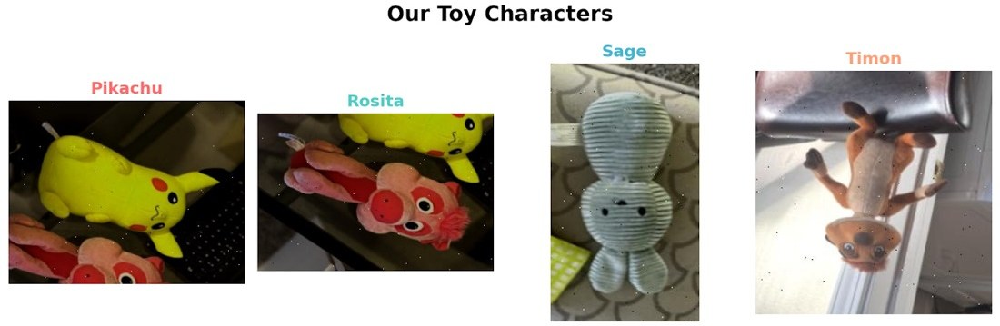
How did I teach the computer?
Just like you learn by practicing, I showed the computer many, many pictures of these toys. Each time, I told it "Yes, that's Pikachu!" or "That's Rosita!" The computer learned by looking at the pictures over and over again — just like how you learned to read by practicing every day!
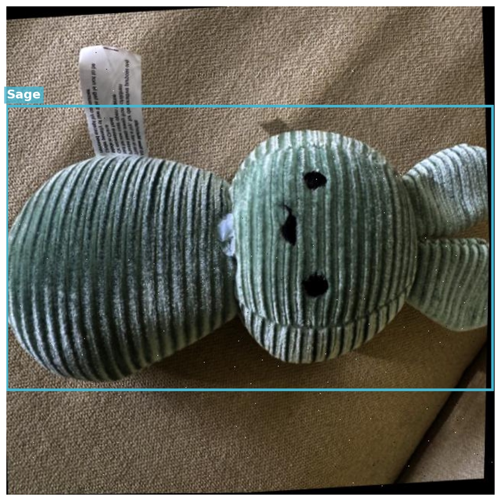
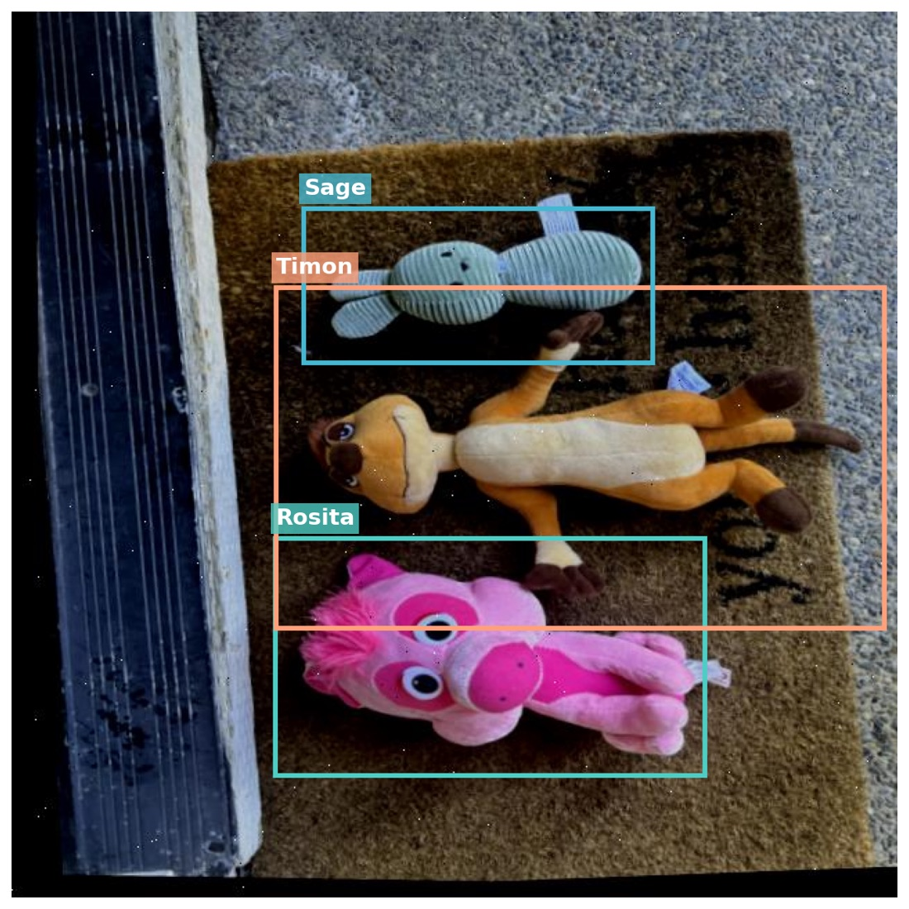
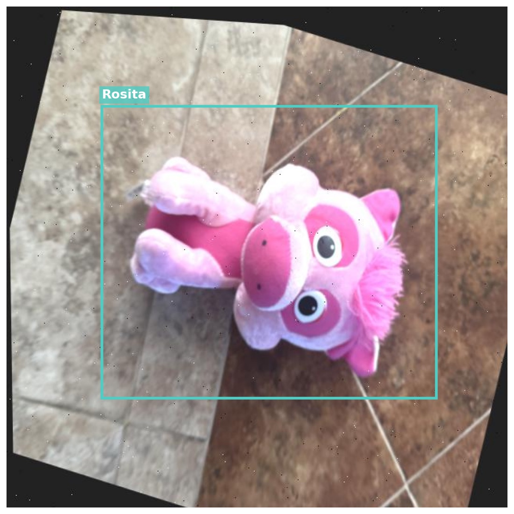
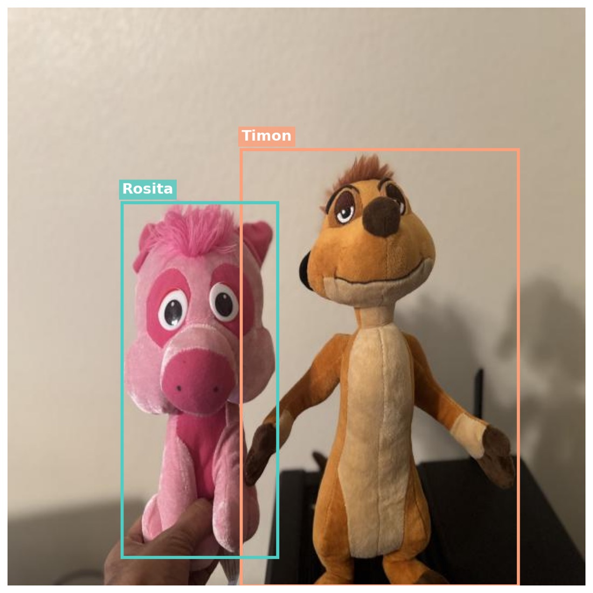
The computer learned by looking at pictures like these. The colored boxes show where each toy is located. I annotated my images using Roboflow, and the dataset is available for download directly from Roboflow.
Understanding My Results
Before diving into the results, let's understand what some metrics mean in simple terms. Think of training a model like teaching a student — we need ways to measure how well they are learning.
Practice Sessions (Epochs)
Each practice session means the computer looked at ALL the toy pictures one time. I had 100 practice sessions. That's like reading the same book 100 times to get really good at it.
Score (Accuracy)
This is like getting a grade on a test. If the computer finds toys correctly 95 times out of 100, that's a 95% score — pretty awesome!
Finding All Toys
Did the computer find EVERY toy in the picture? If there are 5 toys and it finds all 5, that's 100%! If it only finds 4 out of 5, that's 80%.
Being Correct
When the computer says "I found Pikachu!", is it really Pikachu? Being correct means not making mistakes like calling Rosita "Pikachu" by accident!
Mistakes
Sometimes the computer makes mistakes, like missing a toy or getting confused. The good news? It makes fewer mistakes as it practices more!
Getting Better Over Time!
Remember when you first learned to ride a bike? You probably wobbled a lot at first, but got better with practice. The computer did the same thing!
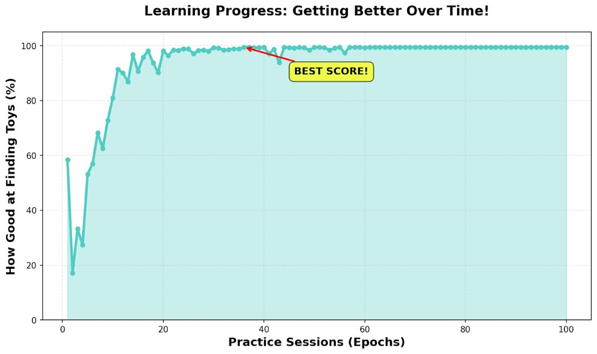
Look at this graph! At the start, the computer was not very good (the line is low). But after lots of practice, it got really good at finding toys! The line goes up and up!
Fun Facts:
- Starting score: 58.5%
- Final score: 99.5%
- Got better by: 41.0 points!
That's like going from a C grade to an A+! Amazing!
Practice vs Real Test
Think about how you learn at school:
Practice (Training): You do homework problems that your teacher helps you with. You learn from these!
Real Test (Validation): Then comes the test with NEW problems you have not seen before. This shows if you really learned or just memorized the homework!
I did the same with the computer! I gave it practice pictures, then tested it with NEW pictures it had never seen. Let's see how it did:
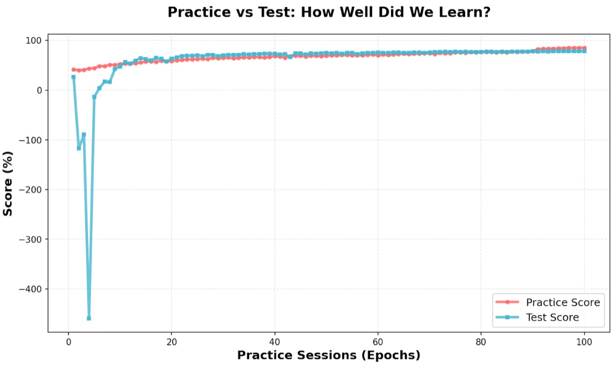
What this shows: The red line (practice) and blue line (test) stay close together! This means the computer did not just memorize — it really learned! It is like understanding math concepts instead of just memorizing answers. Great job, computer!
Finding Toys & Being Right
There are two important things I want the computer to do:
1. Find ALL the toys (don't miss any!)
2. Be correct when it finds them (don't make mistakes!)
Example:
Scenario 1: The computer finds all 10 Pikachus (GOOD!)
Finding all toys: 10 out of 10 = 100%
Scenario 2: The computer says "I found 10 Pikachus!" but 2 were actually Rosita (oops!)
Being correct: 8 out of 10 = 80%
I want BOTH numbers to be high!
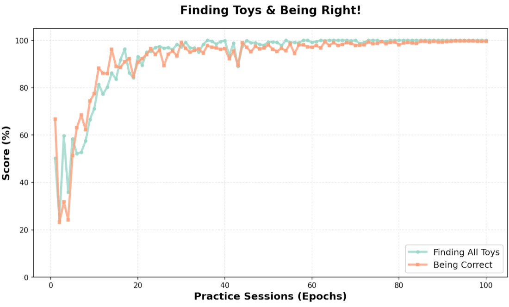
My Computer's Results:
- Finding all toys: 100.0%
- Being correct: 99.6%
Wow! The computer is doing an amazing job at both!
Watching Mistakes Disappear!
Remember how I said the computer makes mistakes? Let's see what happened to those mistakes as the computer practiced more and more.
Think of it like learning to spell. At first, you might spell "because" as "becuz". But after practicing, you get it right every time!
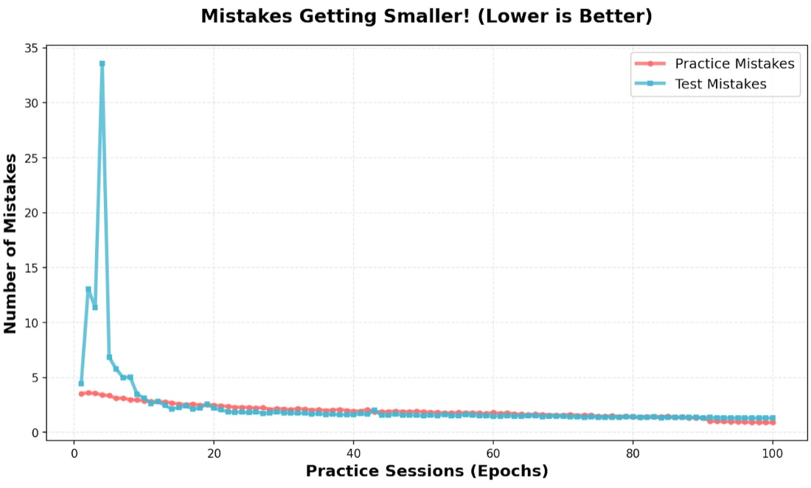
Look at that! The lines are going DOWN!
Going down means FEWER mistakes. At the beginning, the computer made lots of mistakes (the lines are high). But after practicing, the mistakes got smaller and smaller (the lines go down). This is exactly what I wanted!
Final Report Card!
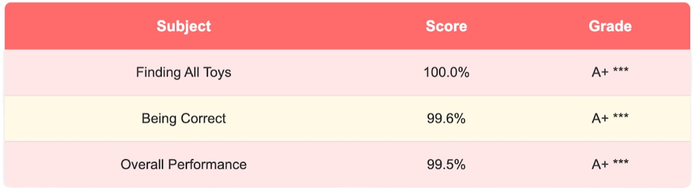
CONGRATULATIONS TO MY COMPUTER!
After 100 practice sessions, my computer learned to find toys like a pro. It went from being confused at the start to becoming a toy-finding expert.
What can my computer do now?
- Look at a picture and find all the toys
- Tell you exactly which character each toy is
- Do it super fast — faster than blinking!
- Work on pictures it has never seen before
This is just like teaching a superhero their powers. Now the computer has the power to see and recognize my toys!
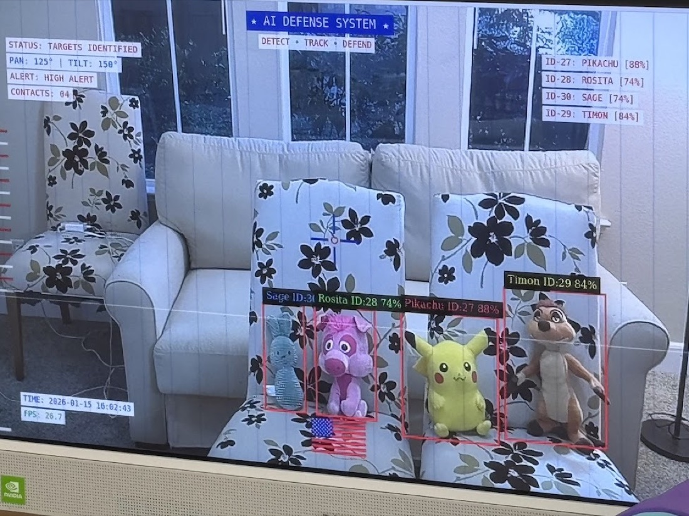